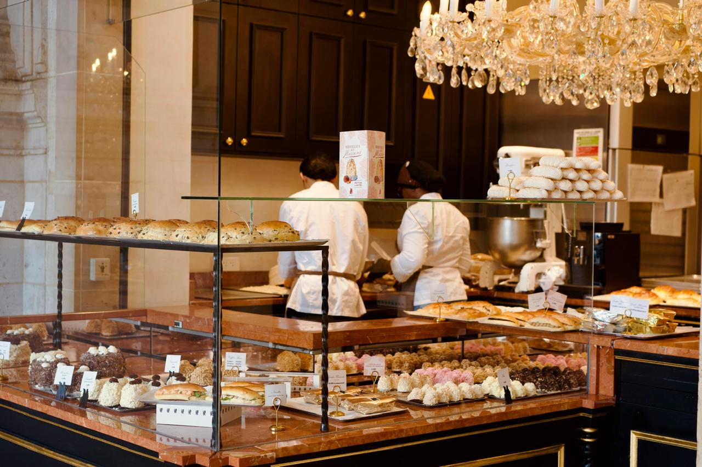

Introduction
French pastries are admired around the world for their elegance, delicate textures and rich flavours. From buttery croissants to colourful macarons, French pâtisserie combines creativity, tradition and refined baking techniques.
Paris is considered one of the most famous pastry capitals in the world, attracting visitors who want to experience authentic French desserts, luxury pâtisseries and traditional bakeries.

The Popularity of French Pastries
French pastries are loved around the world because of their rich flavours, delicate textures and elegant appearance. From buttery croissants and soft brioche to traditional pastries such as galette des rois, French desserts are admired for their light, flaky layers and refined taste.
The combination of high-quality ingredients, artistic presentation and traditional baking methods has helped French pastries remain one of the most respected parts of French cuisine.

History and Evolution of French Pastry
French pastry has a long and fascinating history that developed over many centuries. Although the exact origins of French pastry are uncertain, some historians believe that puff pastry was accidentally discovered by apprentice cook Claudius Gele.
However, historical records show that early forms of puff pastry existed as far back as the 13th century. Over time, French pastry techniques became more refined and sophisticated.
One of the most influential figures in the development of French pastry was Marie-Antoine Carême. He was famous for transforming pastry-making into a respected culinary art and for encouraging the use of high-quality ingredients and elegant presentation.

French Pastry in Culture and Cuisine
In France, desserts are considered more than simply sweet dishes served after meals. French pastry is often viewed as a form of art that combines flavour, creativity and technical skill.
Since the 17th century, talented French pastry chefs have been admired for their impressive dessert creations and decorative pastry designs.
Today, elegant pâtisseries can be found throughout France, especially in Paris where pastry culture continues to attract visitors from around the world. French pastries remain an important symbol of French culture, tradition and culinary excellence.

Elegant French Pastries
Discover a beautiful collection of elegant French pastries, luxurious bakery displays and charming Parisian pâtisserie interiors. French pastries are admired around the world for their delicate textures, artistic decoration and refined presentation.
From colourful macarons and buttery croissants to rich éclairs and fruit tarts, each pastry reflects the creativity, precision and passion of French pastry chefs.

Art and Presentation
French pastries are not only appreciated for their flavour, but also for their beautiful presentation and delicate details.
Pastry chefs carefully decorate desserts using chocolate, cream, fruits and colourful glazes to create visually stunning pastries.
This artistic presentation is one of the reasons why French pâtisserie is considered a form of culinary art.

Ready to explore more?